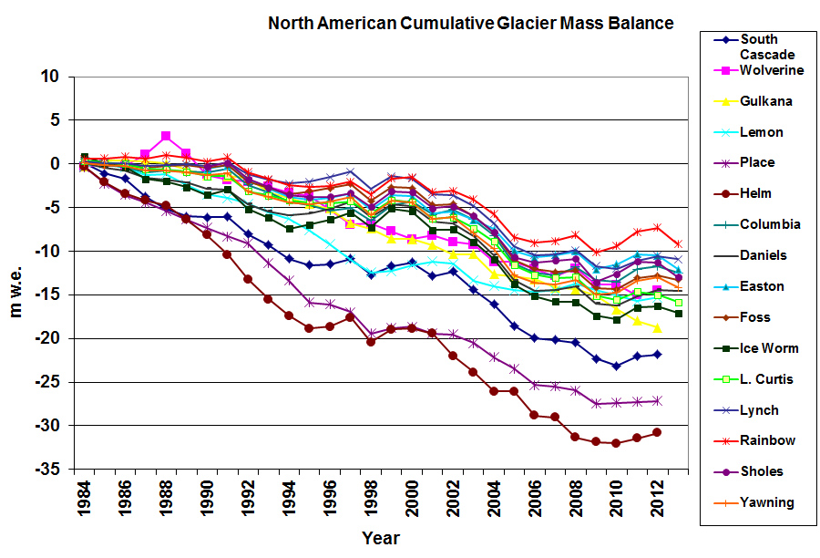

Glacier Trends
Over the past century, glaciers around the world have been retreating at an alarming rate, with significant reductions in sizes and volumes, particularly since the mid-20th century. Historical data shows that many glaciers have lost more than half of their volume since the 1980s, driven primarily by rising global temperatures due to increased greenhouse gas emissions. Graphs and maps illustrate this retreat, showing sharp reductions in ice mass and geographic extents over time. For example, the Greenland Ice Sheet has lost approximately 3.8 trillion tons of ice from 1992 to 2018, contributing significantly to global sea level rise. Similarly, Himalayan glaciers, critical for freshwater supplies for millions, have seen their rate of ice loss double in the 21st century compared to the previous 25 years. These trends highlight the accelerating pace of glacier loss and its widespread impact on water resources and sea levels.

Sources:
NSIDC Glacier Mass Balance
NASA Earth Observatory
United States Geological Survey (USGS)